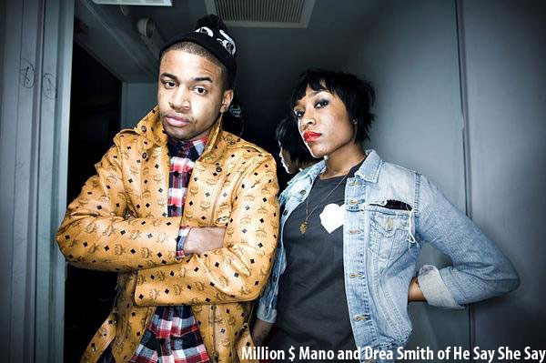
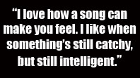
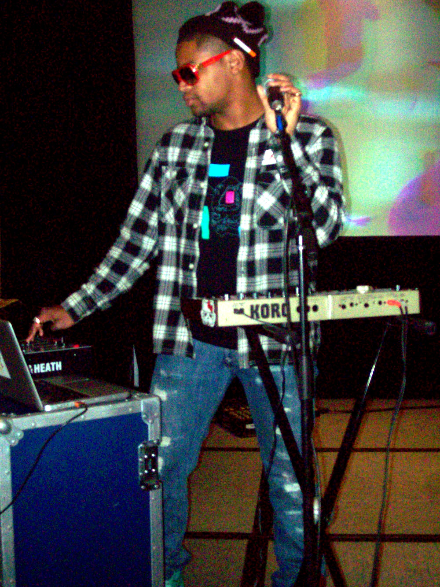
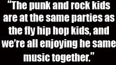
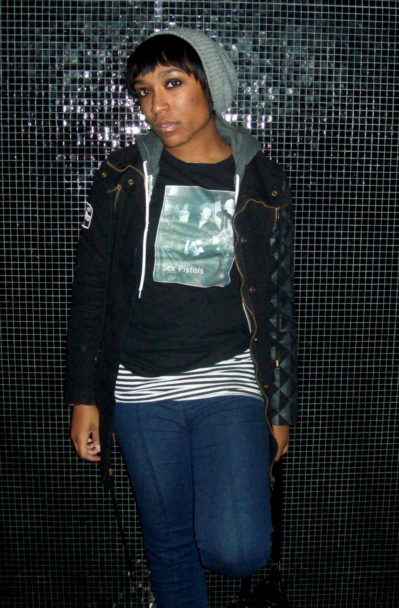

HE SAY SHE SAY: SAY WHAT?!
By: Ciera Mckissick
There’s more to He Say She Say than a Lupe Fiasco song. He Say She Say is on top of the world—the Sears Tower that is. The duo consisting of Chicago’s beloved Million Dollar Mano and Girl Wonder Drea Smith are fresh to death, exuding that young Chicago cool. So cool Fiasco took note and brought them aboard the Chicago talent train. 
He Say She Say has spent the past two years touring around the world with Lupe Fiasco and Kanye West’s Glow in the Dark Tour, performing at Lollapalooza for two consecutive summers, doing gigs, making ends meet, and having fun along the way. Young, talented, and hungry, He Say She Say is paving the way with their hip-rock vibe, fusing together a variety of different styles and influences.
“I think me and Mano's music is progressive because it’s a hybrid of so many genres,” Smith says. “There is no real way to classify [it] because it’s bits and pieces of everything we love about music,” she said. Smith classifies their music as “intelligent pop music,” as it is a mix of punk, electro, rock and new wave. When you hit up a He Say She Say concert and find yourself dancing to their hit song, "Crash Dummie," you may just find yourself thinking while you dance.
Smith finds inspiration in “exaggerated experiences of her own” and the lives of others when writing lyrics. "Crash Dummie" is about “a girl who is getting played by a guy, and she knows it, yet she allows him to continue to emotionally treat her like a crash dummy," Smith explains and sings in the lyrics “I’m just your crash, mash dummy, that you bash in your back seat.”
Some people have found the preceding lyrics to be a bit provocative, but Smith is just keeping it real. “I think it’s funny—I’m an angel,” she says and pauses laughing. “But really I’m just being honest. I’m sure a lot of women my age think the way I do and just don’t know how to or don’t want to say it,” she says. The song is backed with an electro beat with a killer vibe rather than just a tight beat.
“I love how a good song can make u feel,” Smith says. “I like when something's catchy, but still intelligent. Our music makes people think because I talk about real life stuff, almost poetically. I love good lyrics and saying things in a way that it hasn’t been said before. I try to be smart and clever without being too obscure,” she said.
A lot of the music today is dominated by hip hop, but He Say She Say is finding inspiration against the grain. They even do a Foo Fighter’s cover of “Everlong,” which further explains the duo’s unconventional nature. “People assume Mano and I are a hip hop duo because we're coming up in a scene that is dominated by a new wave of hip hop,” Smith says. “A lot of music I hear now is the new wave of hip hop, we aren’t doing hip hop music, even thought we love it, that’s not what this project is about,” Smith explains. 
This project is all about one thing—innovation. When He Say She Say first got together they were more hip hop focused, but as they matured as artists and began experimenting, they began pushing toward a more indie sound—legit rock band included. It was really important for them to create their own individuality rather than “doing some eclectic R&B shit,” according to Mano.
“We’re not just revamped versions of old things,” Mano says. “We wanted to put our own individuality on a spin of what they probably did back then, but still re-freshen it to make it new for what is now,” Mano said. Kind of like the current scene in music, which Smith finds reminiscent of New York in the 80’s.
“The punk and rock kids are at the same parties as the fly hip hop kids, and we're all enjoying the same music together,” Smith says. “We piggy back off each other its cool,” she said. Although neither Smith nor Mano grew up in the peak of the 80’s, it’s hard not to make that connection. This is the new 80’s—a time when the musical masses are merging, and the cool kids at the top of their game can’t help but hang out.
You know when music culture has become a hybrid when Lil Wayne is doing a collaboration with Madonna and Weezer, or when Jay-Z performs with Coldplay and U2, or when T-Pain can change the face of all mainstream music with two words—auto tune. “When the radio and the media like one thing, they’re set on manufacturing that one thing into a continuous route until everybody is tired of it and they want something new,” Mano explains. “And then with that new thing, they do the same thing,” he says. 
Being based out of Chicago, there could be a lot of pressure to measure up against the likes of Kanye West, Lupe Fiasco, Common, and Kid Sister—all Chicago bred talent. But for He Say She Say, there is no intimidation there. Smith doesn’t feel the need to prove herself, explaining that music is like her right arm. “We are all so different,” she says. “Everyone here has drive, at least my direct peers do. They inspire me to go harder,” she said. Especially one direct peer—the he of He Say She Say, Mano.
Mano has been showing Smith the ropes, and the ins and outs of the music business to help mold her into the best artist she can be, whether it be by making music, exposing her to the scene, or helping her be seen with gifts like her Alexander Wang shoes that are eye candy wherever they go. Mano certainly has an eccentric style to go with his eccentric taste in music. When amfm talked to the duo, he was wearing a pair of Nike dunks that were two different colors—one turquoise and one candy apple red, both with gold trim. After a bit of chiding, he insisted the shoes came mismatched. His style as well as his music is always on point.
“Mano is the fresher one,” Smith says. “He pulls from old sounds and new, and he is just a fly dude. I’m a smidge grimier and I love a lot of old punk and jazz singers,” she says. Smith is obsessed with Blondie and Debbie Harry, calling her “the epitome of a rock star.” Her other musical muses are Billie Holiday, Chrissie Hynde and Siouxsie Sioux to name a few. “Chrissie Hynde is an amazing guitar player and has such a unique tone and quality to her voice, but you can feel every emotion that Billie Holiday is feeling in all of her music,” Smith says. “And Siouxsie Sioux had the coolest eerie presence about herself. She was dark but still had pop appeal. I guess I just want to embody those elements from those women,” she said.
Smith feels that with his fly attitude, and her old school influences, they are able to complement each other as a group. Smith still has more to learn she admits. Mano has been in the game far longer, and expresses a greater “pop sensibility” than she does.